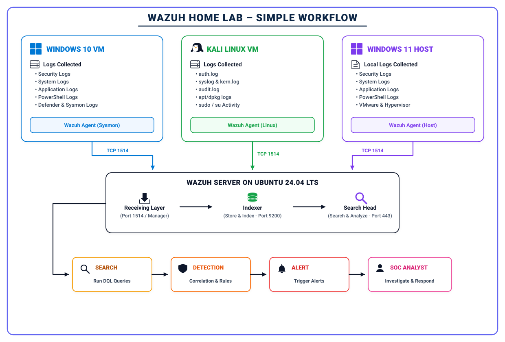
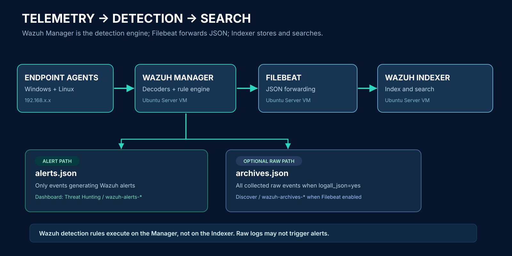
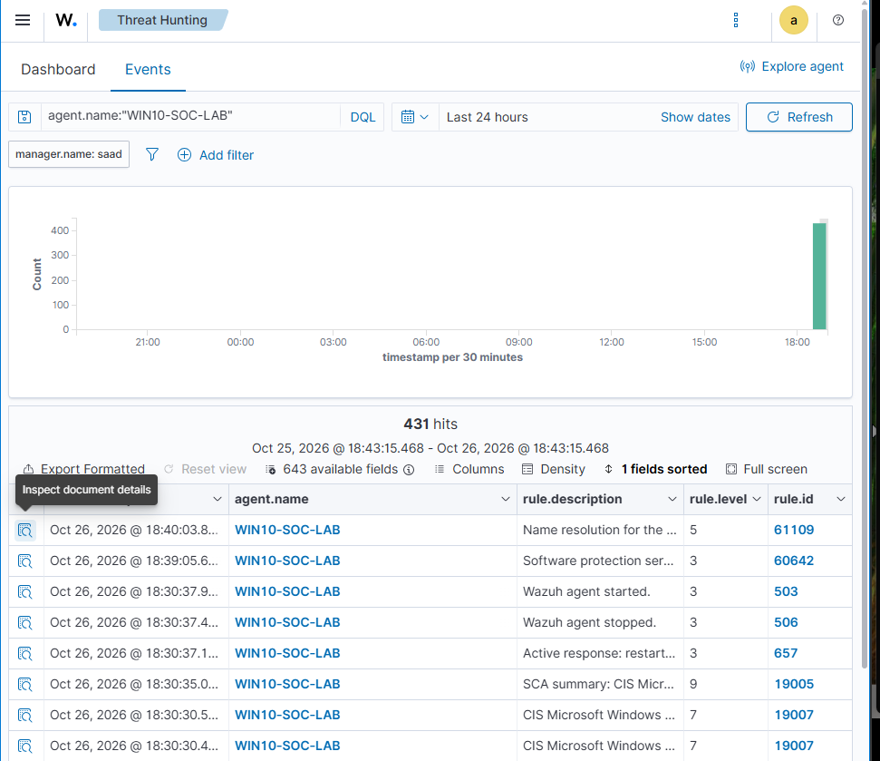
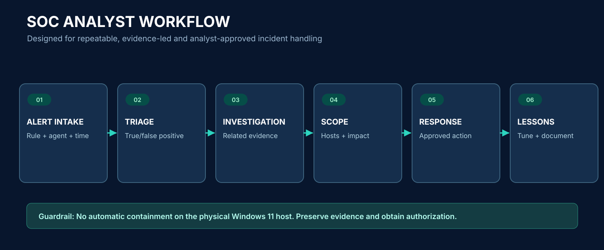

Agent 001
Windows 10 VM
Security, System, Application and Sysmon Operational events. Sysmon Event 13 forwarding was verified from Notepad activity.
A visual guide to an all-in-one Wazuh deployment on Ubuntu Server 24.04 LTS in VMware Workstation, monitoring Windows 10 + Sysmon, Kali Linux and the Windows 11 physical host. All IPs are deliberately masked.
Central Wazuh services run inside Ubuntu. VMware VMs and Windows 11 feed events over an isolated reachable private network.

Wazuh Manager processes detection rules. Filebeat ships JSON. The Indexer stores searchable results. The Dashboard visualizes and searches.

alerts.json → Filebeat → wazuh-alerts-*. Only events matching alert-producing rules.
archives.json → Filebeat archives → wazuh-archives-*. Requires both Manager and Filebeat archive configuration.
Security, System, Application and Sysmon Operational events. Sysmon Event 13 forwarding was verified from Notepad activity.
systemd-journald and native Wazuh monitoring. Synthetic journal test plus built-in sudo Rule 5402 verified.
Monitored agent plus VMware hypervisor, Dashboard browser and SSH administrative console. Enrollment Active; individual raw event verification pending.
The Ubuntu VM must be powered on for SSH, the Dashboard and central detection to work. Powered-off endpoint VMs are expected to become Disconnected; their agents remain enrolled.
Unlike the diagrams above, this is a genuine historical Wazuh UI screenshot from a Windows 10 investigation session.

No. Start the Ubuntu VM from VMware Workstation (or compatible local VMware tooling), then SSH once the guest OS and network are online.
If the Windows 10 VM is off, it will eventually show Disconnected. If running, inspect WazuhSvc, network access to TCP 1514 and the agent log.
Threat Hunting shows alerts. Raw logs without a matching alert rule require archives enabled on the Manager, archives forwarding in Filebeat, and the archive index pattern in Discover.
The Manager decodes and evaluates events against rules. Filebeat and the Indexer follow that analysis stage; the Dashboard is for analysis, search and management.
No. Agent Active proves a connection, not that every configured EventChannel or journal event arrives. Each telemetry source needs an independent end-to-end validation test.
